Computer Science student at AASTMT building toward a career as a Cybersecurity Architect. I break web apps to understand them, monitor systems to defend them, and write Python & Java to automate the boring parts.
psst — press ` or type sudo anywhere to open the terminal
I'm a Computer Science student at the Arab Academy for Science, Technology and Maritime Transport, graduating in 2027. Linux is my daily driver, and the terminal is where I'm most at home.
My focus is offensive security and web application testing — finding SQL injection and XSS with OWASP ZAP, analysing firmware dumps for secrets — balanced with defensive work like Wazuh monitoring and Microsoft 365 security.
Right now I'm co-building ARES, an AI-powered autonomous security platform, as my graduation project. It's where my two interests meet: understanding how attacks work, and designing systems that stop them automatically.
I'd rather show genuine hands-on work than a list of badges. Everything on this page is something I've actually built or done.
An AI-powered enterprise security platform that goes beyond traditional SIEM and EDR. The goal: a system that can detect, understand, and respond to cyber threats autonomously — not just raise alerts for humans to triage.
Extended detection and response across endpoints, network and cloud.
Links assets, identities and events so threats are understood in context.
Automated adversary emulation to continuously test defenses.
An assistant that explains incidents and recommends responses to analysts.
A model of the enterprise environment to safely test changes and attacks.
Works alongside the tools enterprises already run.
A malware visual intelligence engine that turns noisy sandbox logs into evidence-backed, SOC-actionable intelligence.
A Dockerized attacker-vs-defender lab: one container scans while the other detects and correlates the activity.
Practical web application assessments in lab environments.
Analysing a raw memory dump from a simulated embedded device.
Defensive tasks across SIEM, cloud and infrastructure monitoring.
A non-destructive data-cleaning utility for messy CSV files.
Python, Java, C/C++ and Linux at AASTMT — the base everything else builds on.
Web app testing with ZAP, firmware analysis, Wazuh monitoring, M365 security.
Building an autonomous, AI-driven security platform with my team.
Real-world experience on offensive and defensive teams, plus industry certifications.
Designing secure enterprise systems from the ground up.
I'm looking for internships, entry-level security roles and freelance technical work. If you have an opportunity, or just want to talk security, my inbox is open.
Say hello →